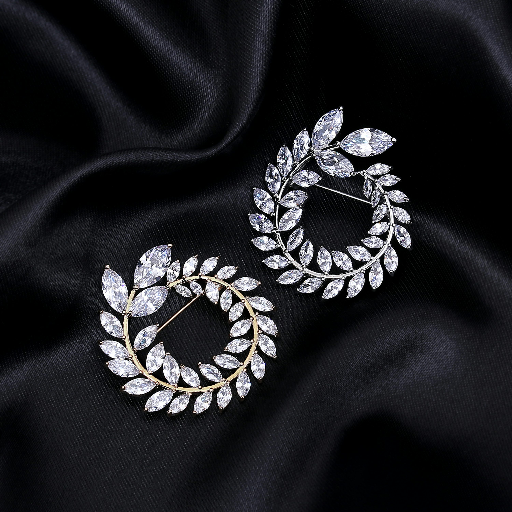
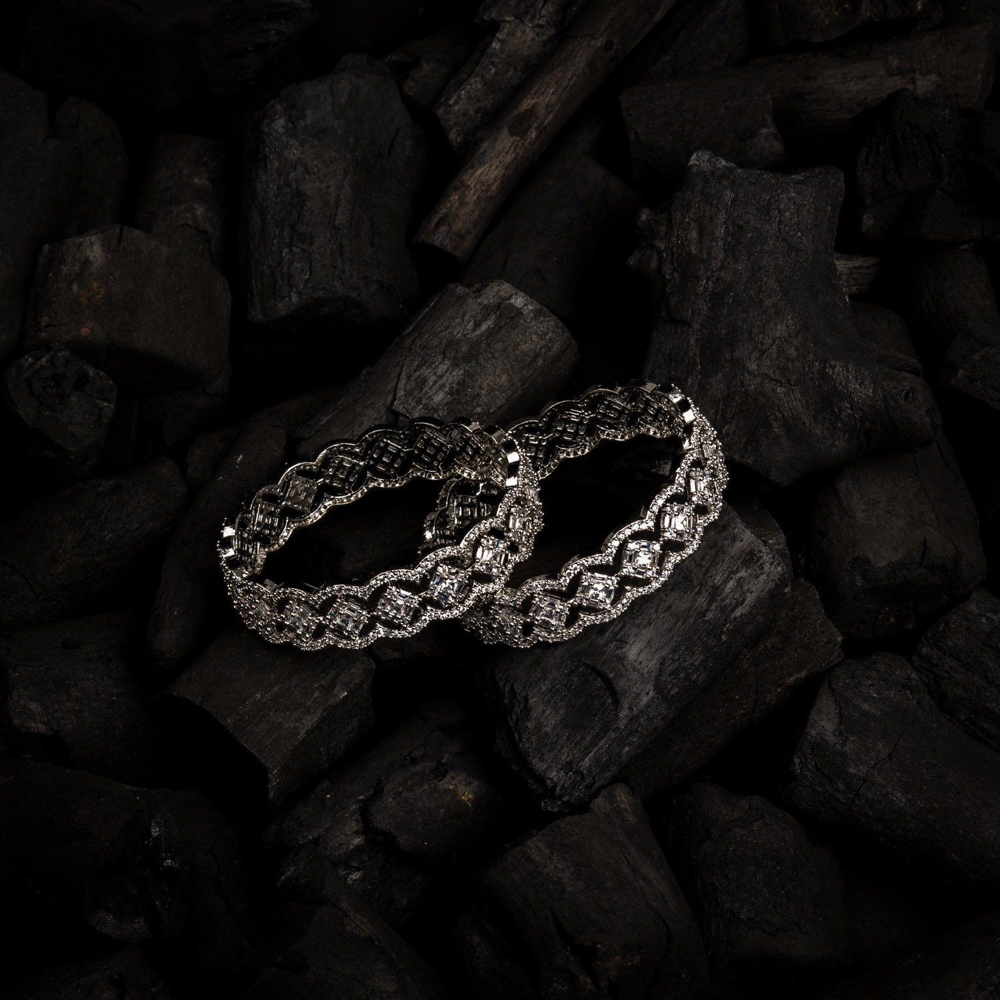

Necklaces may have been one of the earliest types of adornment worn by humans. They often serve ceremonial, religious, magical, or funerary purposes and are also used as symbols of wealth and status, given that they are commonly made of precious metals and stones.
EARRINGS
An earring is a piece of jewelry attached to the ear via a piercing in the earlobe or another external part of the ear, or, less often, by some other means. Earrings have been worn in diverse civilizations and historic periods, often carrying a cultural significance.
Ring

A ring is a round band, usually made of metal, worn as ornamental jewelry. The term "ring" by itself denotes jewellery worn on the finger; when worn as an ornament elsewhere, the body part is specified within the term, e.g., earrings, neck rings, arm rings, and toe rings.
Bangles
Bangles are circular in shape, and, unlike bracelets, are not flexible. The word is derived from Hindi bungri (glass). They are made of numerous precious as well as non-precious materials such as gold, silver, platinum, glass, wood, ferrous metals, plastic.